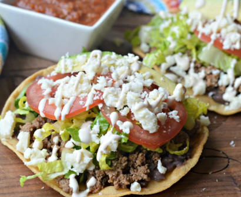

|
|
| Mexican Food |
|
⚫Latin-american and Hispanic culture in
Mexico ⚫Mexican Festivals ⚫Mexican Food ⚫Mexican Dance ⚫Mexican Clothing ⚫Tourist spots in Mexico ⚫Contact us for queries ⚫Back to Home page |
Mexican cuisine is known for its vibrant flavors and colorful presentations, with a wide variety of dishes to choose from. Some of the most popular Mexican dishes are: 1. Chilaquiles - a breakfast dish made of fried or toasted corn tortilla triangles soaked in a red or green hot sauce, topped with shredded chicken, chorizo, shredded beef, and scrambled or sunny-side-up egg, and decorated with fresh cheese, coriander, and sliced onion.
2. Tacos - a dish made of a corn or flour tortilla filled with a variety of ingredients such as beef, pork, chicken, fish, or vegetables, and topped with salsa, onions, cilantro, and lime.
3. Pozole - a soup made of hominy corn with plenty of herbs and spices, often stewed for hours, and garnished with lettuce, radish, onion, lime, and chili
4. Enchiladas - a dish made of tortillas filled with meat, cheese, or beans, rolled up, and covered in chili sauce and cheese.
5. Guacamole - a dip made of mashed avocado, lime juice, and cilantro, often served with tortilla chips.
6. Tamales - a dish made of masa (corn dough) filled with meat, vegetables, or cheese, wrapped in a corn husk and steamed
7. Quesadillas - a dish made of a tortilla filled with cheese and other ingredients such as meat, beans, or vegetables, folded in half and grilled.
8. Fajitas - a dish made of grilled meat (usually beef or chicken) served with sautéed onions and peppers, tortillas, and toppings such as salsa, guacamole, and sour cream.
9. Sopes - a dish made of a thick corn tortilla topped with beans, meat, cheese, lettuce, and salsa.
10. Tostadas - a dish made of a fried or toasted corn tortilla topped with beans, meat, lettuce, cheese, and salsa. These dishes can be found in most Mexican restaurants around the world and are enjoyed by people of all ages |